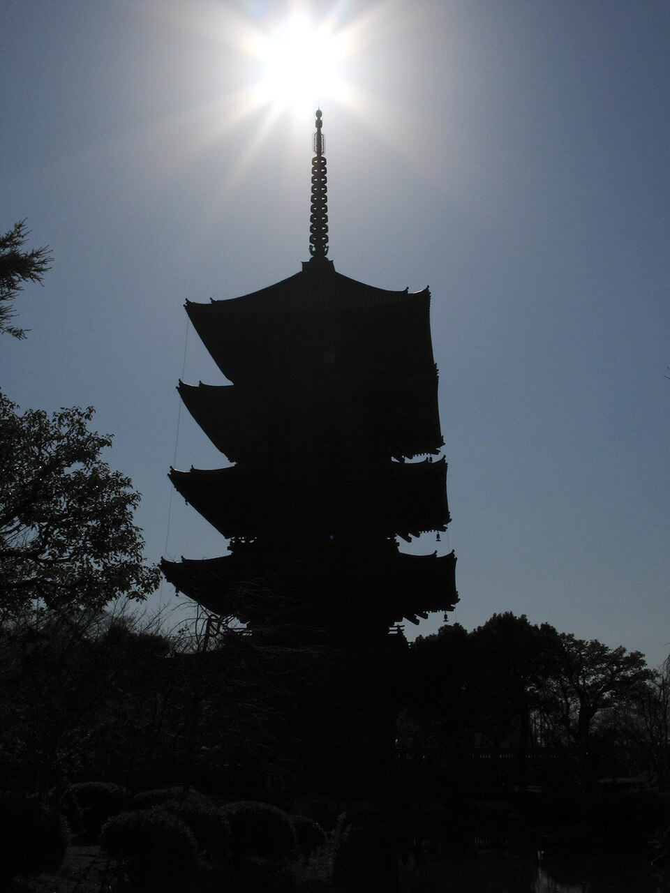
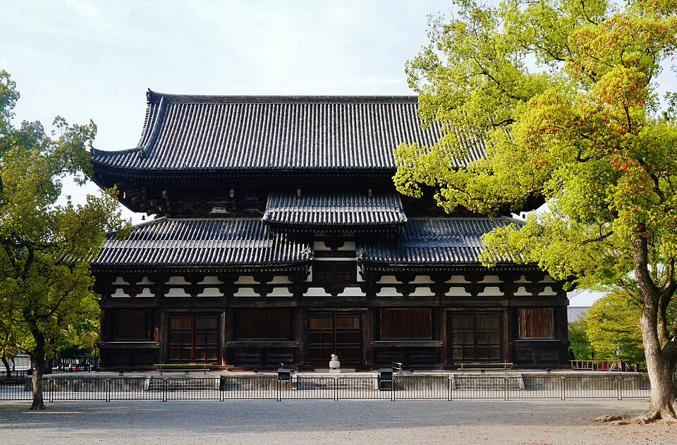

To-ji
У вокзала · ~20-25 мин пешком или 1 остановка Kintetsu от отеля



Основан в 796 году, старейший из сохранившихся храмов Kyoto. Пятиярусная пагода (57 м) - самое высокое деревянное сооружение Японии, построена в 826 году монахом Kukai (Kobo Daishi), нынешняя версия XVII века - сгорала и отстраивалась четыре раза. Внутрь пускают только в дни особых открытий.
8:30-17:00 (апрель-сентябрь, зимой короче), ~¥500 за залы Kondo и Kodo.
Рядом


Фото: Wikimedia Commons (лицензии под каждым фото). Часы и цены проверены 20.10.2026 по путеводителям и официальным сайтам - перепроверь перед визитом, сезонно меняются. ← ко всем местам